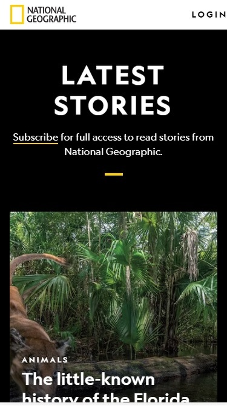
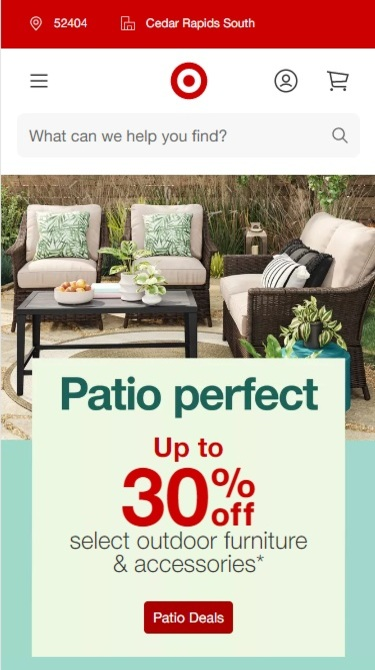

The Nvidia homepage shows good use of the contrast, setting a black background to make the white letters and the green buttons pleasing to the eye and easy to read. The difference font size is also helpful to create an easy-to-read layout.

The NatGeo homepage gives priority to what it believes is their most important message to display by giving distinct, large font sizes to their stories. It also underlines the CTA to draw the attention to that part of the text.

Even though Target uses some overlapping design, the texts are well balanced, the padding gives room around the text in the box, and the overall design is harmonic.